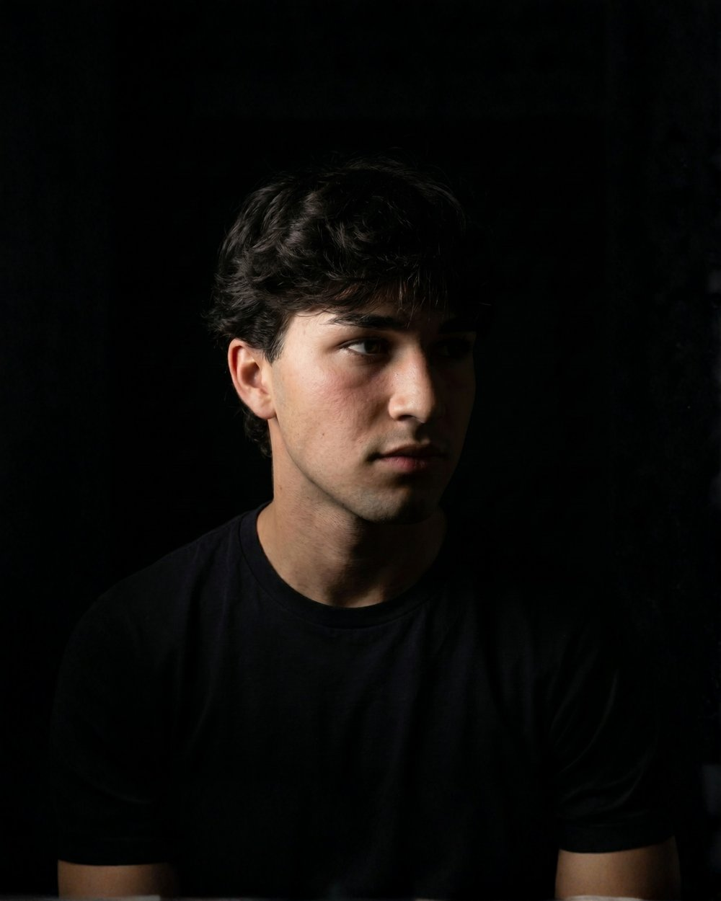

21 años · Barcelona, España · Fundador de Focusgod
Como cualquier joven, pasé tiempo buscando mi propósito. Probando cosas, mirando a otros, tratando de entender hacia dónde iba mi vida.
Nunca lo encontré buscando más fuerte. Lo encontré cuando cambié hacia dónde miraba.
Un día entendí algo que lo cambió todo: para encontrar mi propósito de verdad, tenía que poner mi foco en Dios. Buscar primero su reino, como dice Mateo 6:33.
Ahí vi claro que no bastaba con ir a la iglesia, ni con leer la Biblia cada día por rutina. Tenía que haber algo más.
El foco en Dios no es una tarea más. Es lo que te lleva a tu propósito.
Empecé a buscar de verdad, y vi cómo Dios transformaba mi vida por dentro. Empecé a cargar mi cruz cada día — como dice Lucas: "el que quiera venir en pos de mí, tome su cruz cada día, y sígame."
Seguir a Jesús no es un momento. Es una decisión diaria.
El mundo te engaña manteniendo tu foco en otra parte: en el móvil, en lo que tienes, en lo que aparentas. Y mientras tu foco esté ahí, no puedes ver tu propósito ni lo que Dios quiere hacer contigo.
No cambias tú primero. Cambia tu foco, y ahí Dios te abre los ojos.
Por eso decidí hacer algo. Crear una aplicación que te ayude a recuperar el foco cuando el mundo no deja de distraerte.
Así nació Focusgod: una app para recuperar tu foco. Ponlo en Dios.
Descubrí que mi propósito es este: dar este mensaje a los jóvenes, a cualquiera que lo necesite, para que encuentren el suyo.
Para que tengan esperanza, fuerza, y vean las grandes cosas que Dios tiene preparadas para ellos — planes de bien, no de mal, como dice Jeremías 29:11.
Y si estás leyendo esto, también es para ti.